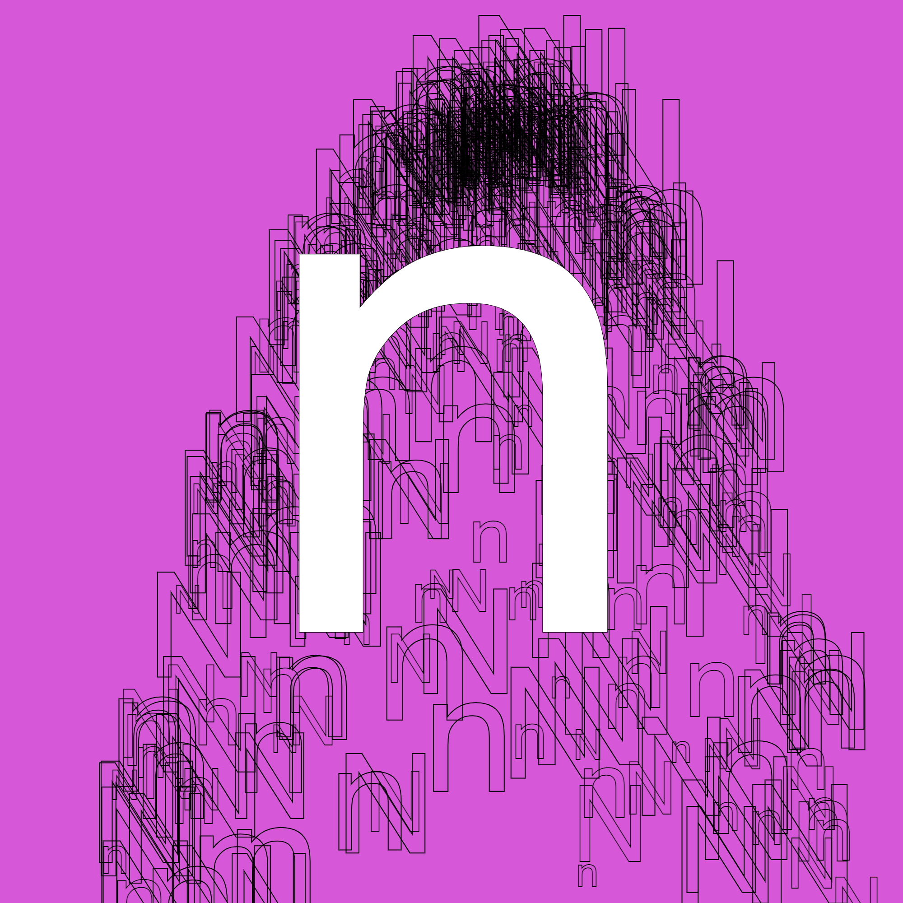

Sketch 18
What I made with p5 -- Day 18!

var of;
var s="Nn"
function ftext(fountain, particle) {
/*stroke(fountain.colors[Math.floor(particle.life*fountain.colors.length)]);*/
noFill();
textSize(particle.partSize);
text(s[particle.id%2], particle.location.x, particle.location.y);
}
function setup() {
createCanvas(1000, 1000);
background(215, 87, 217);
var t =
{
name: "test",
shape: "text",
colors: ["blue","pink"],
lifetime: 600,
angle: [20, 360],
size: [40, 200],
x: 0.5,
y: 0.2
};
Fountain_display("text", ftext); //set draw function based on shape name
of = new Fountain(null, t);
}
function draw() {
background(215, 87, 217);
of.Draw();
of.Create();
of.Step();
noStroke();
fill(255);
textSize(16);
stroke(0);
textSize(800);
text('n', 280, 700);
fill(0);
}
BACK TO MENU